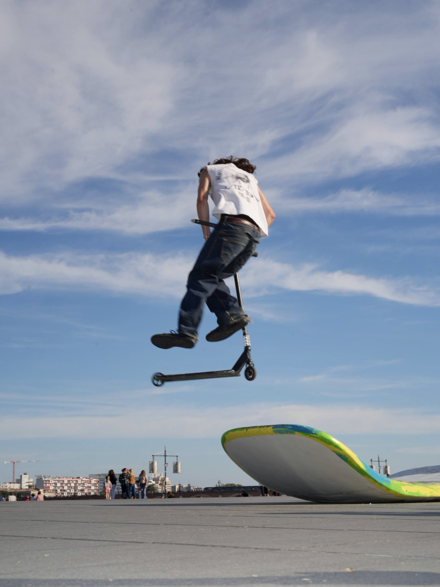
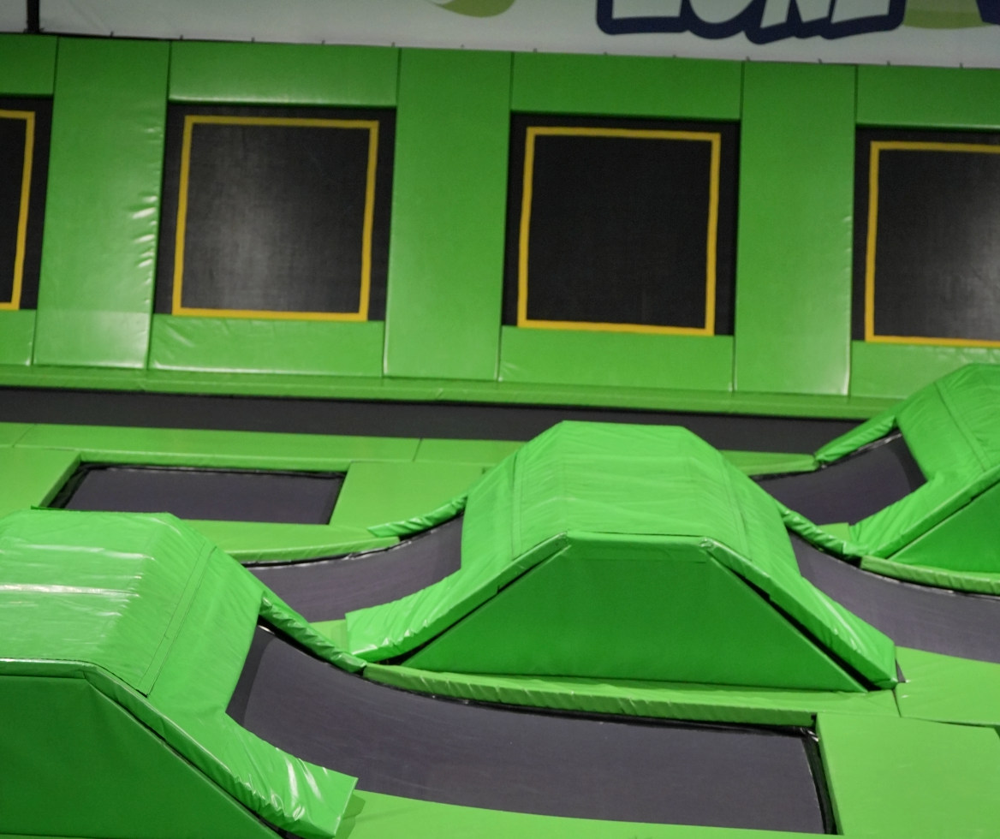
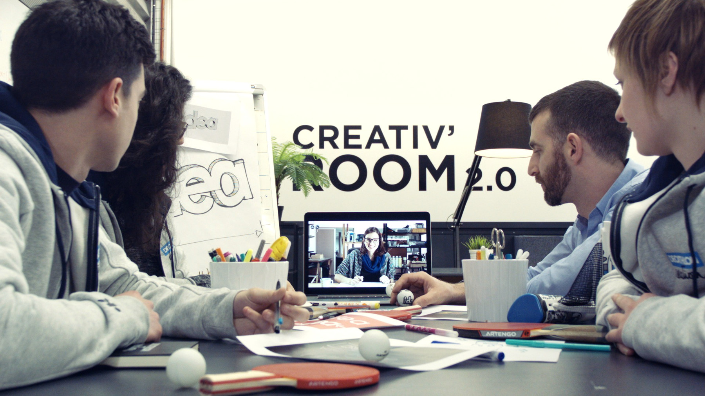
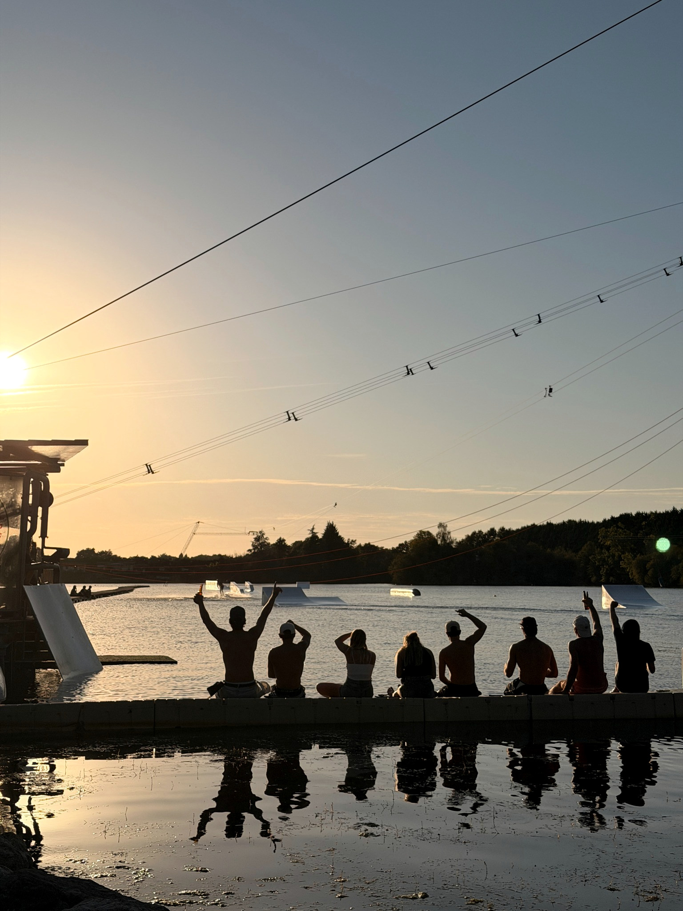

Imaginer un nouveau produit ou service
Transformer un besoin pratiquant, une intuition ou une technologie en proposition de valeur concrète.
SPORTS / OUTDOOR / ACTIVE LEISURE / INNOVATION
J’aide les acteurs du sport et des loisirs à imaginer, concevoir et faire naître leurs prochaines activités, produits et expériences. De la stratégie à la concrétisation.
01 / VOS ENJEUX
Vous connaissez votre activité et votre marché mieux que quiconque. Nous apportons un regard extérieur, de nouvelles perspectives et les compétences pour transformer vos défis en projets concrets.
Transformer un besoin pratiquant, une intuition ou une technologie en proposition de valeur concrète.
Réinventer les usages, les lieux de pratique, les parcours clients et les expériences actives.
Identifier des relais de croissance, des marchés, des partenaires ou de nouveaux modèles économiques.
Structurer un projet, mobiliser les bonnes compétences, expérimenter et accélérer sa réalisation.
02 / NOS TERRAINS DE JEU
Du sport aux loisirs, des équipements aux lieux de vie : quatre terrains pour explorer de nouveaux usages, créer de la valeur et donner envie de participer.

Sports de glisse, outdoor, disciplines émergentes, pratiques et communautés.

Aquaparks, trampoline parks, aires de jeux, parcs d’aventure et loisirs actifs.

Équipements, accessoires, matériaux, conception, fabrication et innovation produit.

Expériences actives, ludiques et participatives, nouveaux formats de jeu, interactions et usages ; le numérique lorsqu’il enrichit le vécu.
03 / CE QUE NOUS FAISONS
Pas de solution préfabriquée. Une intervention adaptée à votre enjeu, à votre équipe et à l'avancement de votre projet.
Prendre du recul, détecter les opportunités et choisir celles qui ont du sens.
Imaginer des produits, des activités et des expériences, puis tester leur valeur.
Structurer, mobiliser et faire naître les projets, avec les bonnes compétences.
Une mission ciblée, un accompagnement dans la durée ou un projet à construire ensemble.
Échangeons sur votre besoin ↗04 / NOTRE FAÇON D'AVANCER
Prise de recul, pragmatisme et audace : croiser les regards, questionner les évidences et transformer les opportunités en actions concrètes.
Partir des personnes, des usages et des réalités du marché. Explorer les possibles, imaginer ce qui n'existe pas encore, puis prototyper, mobiliser et développer pour lui donner vie. Le design thinking est l'un de nos outils, jamais une fin en soi.
Observer les pratiquants et les utilisateurs, révéler leurs besoins, leurs motivations et leurs irritants. Faire émerger les insights qui comptent.
Comprendre votre activité, vos marchés, les tendances et les alternatives. Clarifier le problème et les opportunités à saisir.
Stimuler la créativité, croiser les points de vue, générer des concepts et sélectionner les solutions à plus forte valeur.
Matérialiser les idées, les confronter au terrain, recueillir les retours et ajuster avant d'investir davantage.
Mobiliser les partenaires, structurer le développement et transformer les apprentissages en produits, services ou activités concrètes.
Une démarche itérative, pas un parcours imposé : nous intervenons là où vous avez besoin d'un regard extérieur, d'un coup d'accélérateur ou d'un partenaire pour faire.
05 / NOTRE ÉTAT D’ESPRIT
Une façon de travailler qui fait écho aux univers que nous accompagnons : explorer avec curiosité, avancer avec rigueur, créer du plaisir.
Oser explorer, questionner, imaginer, manipuler et tester. Le jeu ouvre des possibilités et rend l'innovation collective et vivante.
Structurer, décider, prototyper, développer. L'exigence et le pragmatisme transforment les idées en solutions viables.
Créer des produits, des lieux et des expériences qui donnent envie de bouger, de jouer, de partager et de recommencer.
PLAY SERIOUSLY. CREATE PLEASURE.
06 / EXPÉRIENCE
Serious Playgrounds s'appuie sur un parcours qui relie vision stratégique, exploration des opportunités, création de nouvelles activités et concrétisation de projets.
De la stratégie d'innovation chez Decathlon à Decathlon Creation, puis à l'entrepreneuriat avec Windiver : un même moteur, imaginer ce qui n'existe pas encore et contribuer à le faire exister.
Une expérience nourrie par les usages réels, la pratique des sports de glisse et l'engagement associatif. Aujourd'hui, l'ambition est de créer les activités de demain plutôt que simplement gérer celles d'aujourd'hui.
Les expériences citées illustrent le parcours professionnel et personnel du fondateur ; elles ne constituent pas une liste de clients de Serious Playgrounds.
07 / PARLONS-EN
Une nouvelle activité à inventer, un produit à développer, une opportunité à explorer ou un projet d’innovation à concrétiser ? Commençons par en parler.
Écrire à Serious Playgrounds ↗Premier échange pour comprendre votre enjeu et envisager une collaboration adaptée.